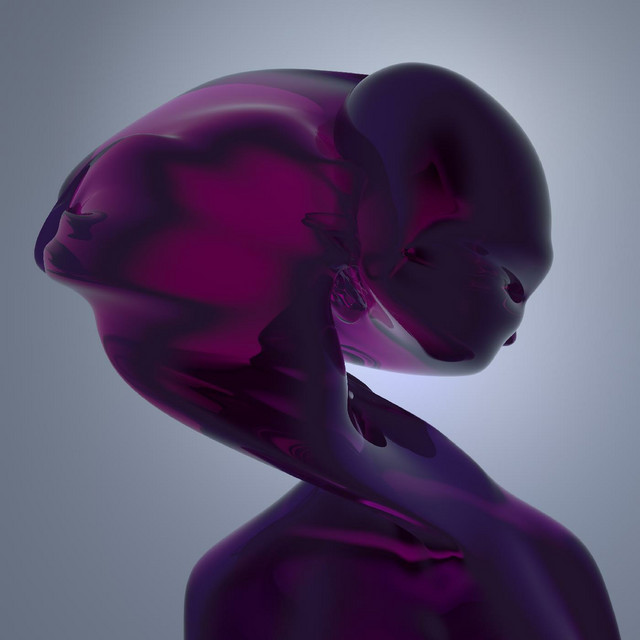

Loraine James - Reflection



Información del álbum facilitada por discogs.com:
Fecha de lanzamiento: 2021
Géneros: Electronic
Estilos: Grime, Deconstructed Club
Tracklist:
Built To Last (feat. Xzavier Stone) 2:17
Let’s Go 3:41
Simple Stuff 3:27
Black Ting (feat. Le3 bLACK) 4:17
Insecure Behaviour And Fuckery 5:00
Self Doubt (Leaving The Club Early) 4:34
On The Lake Outside (feat. Baths) 4:51
Reflection 3:31
Change 7:12
Running Like That (feat. Eden Samara) 4:19
We’re Building Something New (feat. Iceboy Violet) 2:31